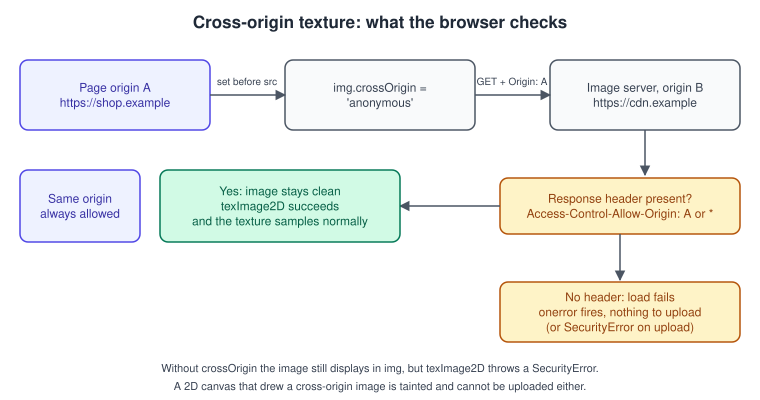
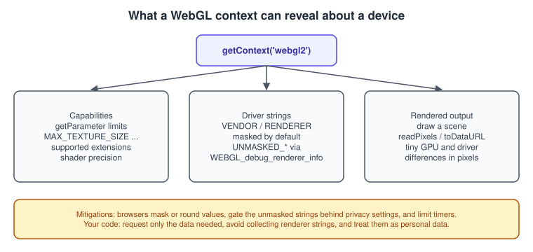

WebGL Security, CORS and Privacy
|
This content was generated with the assistance of AI and should be verified against the official documentation before being relied on in production. |
WebGL gives a web page direct access to the GPU, which is a powerful and shared resource. For that reason the platform adds a set of rules that desktop OpenGL does not have: images and videos from other sites cannot be uploaded to a texture unless the other site agrees, the memory a page can touch is always initialised, timers are coarse, and some of the strings that identify the graphics hardware can be hidden. Most of the time these rules only show up as a confusing error in the console. This page explains what each rule protects, which headers and attributes satisfy it, and which data a WebGL page reveals about the visitor.
The general concepts behind this page are in GPU Architecture Basics.
The facts were checked in November 2026 against the Khronos WebGL 1.0 and 2.0 specifications (editor’s drafts of June 2026), the
MDN WebGL documentation and the three.js manual and documentation for r187 (three@0.187.0). They apply to every evergreen browser
with WebGL 2 (Chrome 56, Firefox 51, Safari 15 and Edge 79 or newer) and need nothing but an HTTP server for the files. The page
belongs to the Bookshelf running example at the textured-quad step: it explains what must be true so that the book-cover texture of
Textures and Samplers loads when the images live on a CDN instead of the same
server.
The same-origin policy meets the GPU
Browsers allow a page to display an image from any site, but not to read its pixels. Showing the image in an <img> element is safe
because the page never sees the data. Uploading the image to a texture is different: a shader can sample it, and the page can then
read the result back with readPixels, toDataURL or by timing how long the draw took. If that were allowed for any image, a
malicious page could read a banking logo or a private photo hosted on another origin. WebGL therefore applies the same
rule as the 2D canvas: pixels from another origin may be used only if the other origin opts in through
CORS (cross-origin resource sharing).

The rule has three parts that must all line up:
-
The page asks for the image in CORS mode, by setting
crossOriginon theImage(or<img>,<video>) beforesrc. The browser then sends anOriginheader with the request. -
The server answers with an
Access-Control-Allow-Originheader that names the page origin or is*. -
The response is an image the page is allowed to see. Only then does
texImage2Daccept it.
Source: MDN: Using textures in WebGL
The crossOrigin attribute
crossOrigin has three useful values:
| Value | Meaning | Typical use |
|---|---|---|
not set |
No CORS request. The image can be displayed but is tainted: it cannot be uploaded to a WebGL texture and cannot be read from a canvas. |
Same-origin images, or images that are only shown in the DOM. |
|
CORS request without credentials: no cookies or HTTP authentication are sent. The server must send |
CDNs and public image hosts. This is what WebGL pages nearly always want. |
|
CORS request that includes cookies. The server must send a specific origin (not |
Images behind a login on a related domain. |
The order of statements matters: the attribute must be set before src, because setting src starts the request.
// Load an image so that it can be used as a WebGL texture, even from another origin.
function loadImage(url) {
return new Promise((resolve, reject) => {
const image = new Image();
image.crossOrigin = 'anonymous'; // must come before src
image.onload = () => resolve(image);
image.onerror = () => reject(new Error(`Could not load ${url} (network error or missing CORS header)`));
image.src = url;
});
}
const gl = document.querySelector('canvas').getContext('webgl2');
const image = await loadImage('https://cdn.example/bookshelf/cover.png');
const texture = gl.createTexture();
gl.bindTexture(gl.TEXTURE_2D, texture);
// Throws a SecurityError if the image was not loaded in CORS mode or the server did not agree.
gl.texImage2D(gl.TEXTURE_2D, 0, gl.RGBA, gl.RGBA, gl.UNSIGNED_BYTE, image);
gl.generateMipmap(gl.TEXTURE_2D);When the server does not send the header, an image loaded with crossOrigin = 'anonymous' fails to load at all (the error
event fires) instead of loading as a tainted image. The failure is therefore visible at load time, which is easier to debug than
the SecurityError exception that texImage2D throws for an image requested without CORS. Both are the same policy seen at two moments.
What the server must send
For a static host or CDN, the response to the image request needs one header. The examples below are the minimum for a public asset; a real deployment limits the origin to the sites that need the file.
# Response headers for https://cdn.example/bookshelf/cover.png
Access-Control-Allow-Origin: *
Cache-Control: public, max-age=31536000, immutable
Vary: OriginTwo details cause most of the trouble in practice. First, a cached copy of the image that was fetched earlier without CORS (for
example by an <img> in the HTML) can be reused for the CORS request, and the browser then reports a missing header even though the
server is configured correctly. Loading every image of a page the same way, or adding Vary: Origin on the server, avoids this.
Second, redirects must carry the header on every hop, so a CDN redirect to a storage bucket needs CORS enabled on the bucket.
Tainted canvases, video and other sources
Every pixel source for texImage2D and texSubImage2D goes through the same check. The sources and what they require:
| Source | Requirement |
|---|---|
|
Same origin, or CORS-approved. An |
|
Same origin, or |
|
Must not be tainted. A 2D canvas becomes tainted when a cross-origin image without CORS approval is drawn into it. Another WebGL canvas is fine. |
|
Always allowed: the page already owns the bytes. |
|
Browsers treat local files as opaque origins, so textures loaded from them fail. Use a local development server. |
The last row is the answer to one of the most common beginner questions. Opening an HTML file by double-click may work for a
triangle, but it stops working as soon as the first texture is loaded. Older guides sometimes recommend starting the browser with its
security features disabled; do not do that, run a static server instead (npx vite or python3 -m http.server).
ImageBitmap is also the recommended way to decode images without blocking the main thread, and it works in workers. The CORS
requirement is applied when the bytes are fetched, so the example below uses fetch in CORS mode and decodes the blob.
// Decode off the main thread, and respect CORS for the fetch.
async function loadBitmap(url) {
const response = await fetch(url, { mode: 'cors', credentials: 'omit' });
if (!response.ok) throw new Error(`HTTP ${response.status} for ${url}`);
const blob = await response.blob();
// Flip once at decode time instead of using UNPACK_FLIP_Y_WEBGL for ImageBitmap sources.
return createImageBitmap(blob, { imageOrientation: 'flipY', premultiplyAlpha: 'none' });
}
const bitmap = await loadBitmap('https://cdn.example/bookshelf/cover.png');
gl.texImage2D(gl.TEXTURE_2D, 0, gl.RGBA, gl.RGBA, gl.UNSIGNED_BYTE, bitmap);
bitmap.close();Source: MDN: createImageBitmap
Reading pixels back
The reverse direction has restrictions too. gl.readPixels is always allowed on the page’s own context, because WebGL does not
let a context be tainted by drawing: a texture can only contain data that passed the checks above. canvas.toDataURL, toBlob and
convertToBlob behave the same way. What is different is the drawing buffer: by default it is cleared after the page composites it,
so a call to toDataURL made outside the frame that drew the scene returns a blank image. Either read inside the same task as
the draw call, or create the context with preserveDrawingBuffer: true at a performance cost. The Bookshelf picking code of
Framebuffers and Render to Texture reads from an off-screen framebuffer,
so it does not need that flag.
Memory safety and denial of service
The specification requires that a page never sees data it did not write. Buffers and textures are zero-initialised, out-of-range
reads in shaders return zero or a defined value, and drawElements validates that the indices stay inside the bound buffers. This
validation is one reason WebGL is slower to issue draw calls than native OpenGL. Shaders are also validated by the browser before they
reach the driver, and the translation layer (ANGLE in Chrome, Firefox and Safari) rewrites loops and array access so that undefined behaviour in
native drivers cannot be reached.
Heavy shaders cannot be fully contained, and a page can still make the machine unresponsive. Browsers answer in three ways:
-
Context loss. If the GPU process is reset because a draw takes too long, the page receives
webglcontextlostand must recover. See Context Loss and Robustness. -
Limits per page. Browsers cap the number of live contexts per page and drop the oldest when the cap is exceeded.
-
Resource budgets. Very large allocations fail with
OUT_OF_MEMORYerrors, and thegetErrorresult must be checked after allocation-heavy calls.
Source: WebGL 2.0 specification
Privacy: what a WebGL context reveals
WebGL exposes details of the graphics stack that are useful for compatibility and, as a side effect, for tracking. A visitor who blocks cookies can still be recognised by the combination of values the context returns.

-
Capabilities.
gl.getParameterreturns dozens of limits (MAX_TEXTURE_SIZE,MAX_VERTEX_UNIFORM_VECTORS,ALIASED_LINE_WIDTH_RANGEand others),getSupportedExtensionslists extensions, andgetShaderPrecisionFormatgives the precision of each shader type. They differ between GPU families and drivers. -
Driver strings.
gl.getParameter(gl.VENDOR)andgl.RENDERERreturn generic strings in current browsers. The real names come from theWEBGL_debug_renderer_infoextension, which exposesUNMASKED_VENDOR_WEBGLandUNMASKED_RENDERER_WEBGL. -
Rendered output. Two GPUs can produce slightly different pixels for the same scene (rounding, anti-aliasing and texture filtering differ), and hashing a rendered frame is a known fingerprinting technique.
WEBGL_debug_renderer_info
The extension is meant for debugging and for working around driver bugs. MDN marks it as widely available since April 2017, available
in both WebGL versions and in workers, and notes that depending on privacy settings it can be restricted. In Firefox it is disabled
when privacy.resistFingerprinting is enabled. Code must therefore treat the extension as optional.
// Log the GPU only when the browser agrees to say. Never assume the extension exists.
function describeGpu(gl) {
const info = gl.getExtension('WEBGL_debug_renderer_info');
if (!info) {
return { vendor: gl.getParameter(gl.VENDOR), renderer: gl.getParameter(gl.RENDERER), masked: true };
}
return {
vendor: gl.getParameter(info.UNMASKED_VENDOR_WEBGL),
renderer: gl.getParameter(info.UNMASKED_RENDERER_WEBGL),
masked: false,
};
}
const gl = document.querySelector('canvas').getContext('webgl2');
console.log(describeGpu(gl));Source: MDN: WEBGL_debug_renderer_info
Good practice follows from what the extension is for:
-
Do not use the renderer string to choose code paths when a capability test would work. Query limits and extensions instead; see Extensions and WebGL Versions and Browser Support.
-
If you log it for diagnostics, send it only with the visitor’s consent, because together with other values it narrows down the device.
-
Do not build a deny list of "bad GPUs" from it. Names are reported inconsistently, and browsers keep their own driver deny lists and report them through
failIfMajorPerformanceCaveat.
Fingerprinting defences in browsers
Browsers apply different mitigations, and the details change between releases, so build for the guaranteed minimum: generic strings by default, optional or disabled unmasked strings, rounded or reduced values in strict privacy modes, and coarser timers. A page that must work everywhere should treat every queried value as possibly masked.
Timing restrictions
Precise timers let a page measure the GPU or the memory system and extract information it should not have. For this reason:
-
performance.now()has a reduced resolution, and in some browsers that resolution is higher only in cross-origin isolated pages. -
The GPU timer-query extension
EXT_disjoint_timer_query_webgl2(and its WebGL 1 variant) is restricted or unavailable in several browsers because of timing attacks. Do not rely on it being present; see Performance and Debugging. -
gl.getErrorandgl.finishare synchronous calls that stall the pipeline. They are not security risks but are blamed in profiles, so call them in development builds only.
Cross-origin isolation (the Cross-Origin-Opener-Policy: same-origin and Cross-Origin-Embedder-Policy: require-corp headers) is
required by features such as SharedArrayBuffer. A page that enables it also gains stricter rules: every sub-resource, including the
textures from a CDN, must either be same-origin or opt in with Cross-Origin-Resource-Policy or CORS. If you add
cross-origin isolation to a WebGL site and textures stop loading, this is the first thing to check.
Source: MDN: Performance.now()
Content Security Policy
A site with a Content Security Policy needs rules for the resources WebGL pages use:
| Resource | Directive |
|---|---|
Textures and |
|
Blob and data URLs created from decoded files |
|
Web workers (OffscreenCanvas) |
|
Wasm decoders such as Draco and Basis |
|
Source: MDN: Content Security Policy
Security and privacy in three.js
three.js does not change the rules, but it hides some of the code. TextureLoader and ImageBitmapLoader set the
crossOrigin property on the loading request, and the default is 'anonymous'; the loader can be configured with setCrossOrigin. The
CDN rules above apply unchanged to GLTFLoader, which fetches the .glb with fetch and decodes textures through ImageBitmapLoader where the browser supports
it. The Bookshelf loader therefore needs nothing more than a correct CORS header on the server that holds bookshelf.glb
and its textures (available as bookshelf.glb for local use).
import * as THREE from 'three';
const loader = new THREE.TextureLoader();
loader.setCrossOrigin('anonymous'); // the default; shown to make the requirement visible
loader.load(
'https://cdn.example/bookshelf/cover.png',
(texture) => {
texture.colorSpace = THREE.SRGBColorSpace; // colour data, see the colour-management page
cover.material.map = texture;
cover.material.needsUpdate = true;
},
undefined,
(error) => console.error('Texture failed, check the Access-Control-Allow-Origin header', error),
);Source: three.js docs: TextureLoader
A checklist for textures that do not show up
-
Open the network panel and look at the image request. Is there an
Originrequest header? If not,crossOriginwas set aftersrc, or never set. -
Does the response carry
Access-Control-Allow-Origin? Does the value match your page origin or*? -
Is the page opened from
file://? Use a server. -
Was the image drawn on a 2D canvas first? A tainted 2D canvas cannot be uploaded; create the canvas after the image passes the checks.
-
Is the same URL also used by an
<img>without CORS? The cache can return the non-CORS copy. -
Does the console show a
SecurityErrorfromtexImage2D? The message names the origin that was refused.
Where the books are outdated
| Old statement | Today |
|---|---|
PAR chapter 7 treats security mostly as a question of browser support: Internet Explorer without WebGL, Safari behind a developer toggle, iOS only inside advertising frames. |
WebGL 2 runs in every evergreen browser (Safari and iOS from version 15). Internet Explorer is retired. The security discussion is now about CORS, privacy and context loss. |
LTJ chapter 1 and TCB chapter 1 describe disabling browser security or using a plugin so that |
Never disable security. Use a development server (Vite) or an import map with a static server. Cross-origin assets need CORS headers. |
Examples load textures with |
|
Books do not discuss fingerprinting. |
|
References
-
WebGL 2.0 specification: https://registry.khronos.org/webgl/specs/latest/2.0/
-
WebGL 1.0 specification: https://registry.khronos.org/webgl/specs/latest/1.0/
-
WebGL extension registry, WEBGL_debug_renderer_info: https://registry.khronos.org/webgl/extensions/WEBGL_debug_renderer_info/
-
MDN, WebGL API: https://developer.mozilla.org/en-US/docs/Web/API/WebGL_API
-
MDN, Using textures in WebGL: https://developer.mozilla.org/en-US/docs/Web/API/WebGL_API/Tutorial/Using_textures_in_WebGL
-
MDN, WEBGL_debug_renderer_info: https://developer.mozilla.org/en-US/docs/Web/API/WEBGL_debug_renderer_info
-
MDN, CORS: https://developer.mozilla.org/en-US/docs/Web/HTTP/Guides/CORS
-
MDN, HTMLImageElement.crossOrigin: https://developer.mozilla.org/en-US/docs/Web/API/HTMLImageElement/crossOrigin
-
MDN, Content Security Policy: https://developer.mozilla.org/en-US/docs/Web/HTTP/Guides/CSP
-
three.js manual: https://threejs.org/manual/
-
three.js documentation, TextureLoader: https://threejs.org/docs/#api/en/loaders/TextureLoader
-
Learning Three.js, second edition (publisher page): https://www.packtpub.com/en-us/product/learning-threejs-the-javascript-3d-library-for-webgl-second-edition-9781784392215
-
WebGL: Up and Running (publisher page): https://www.oreilly.com/library/view/webgl-up-and/9781449326487/